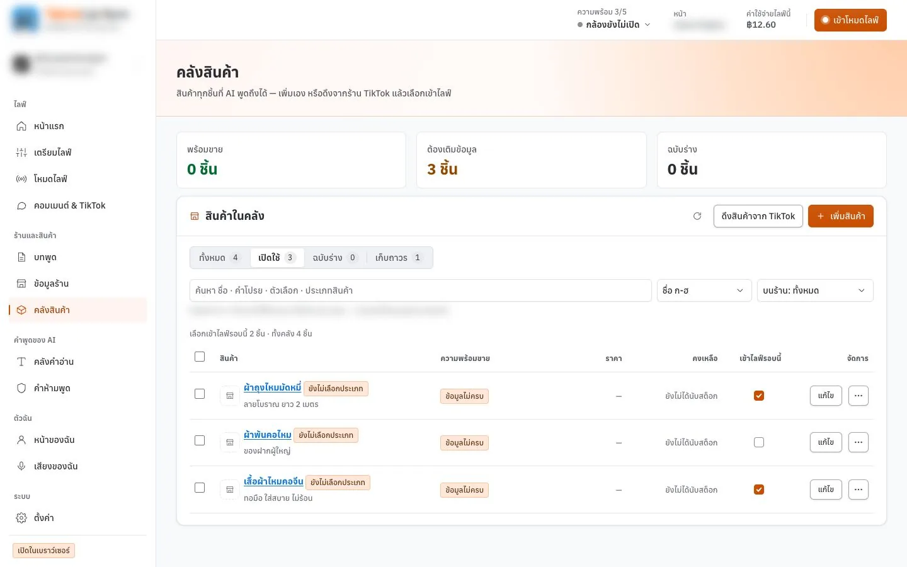
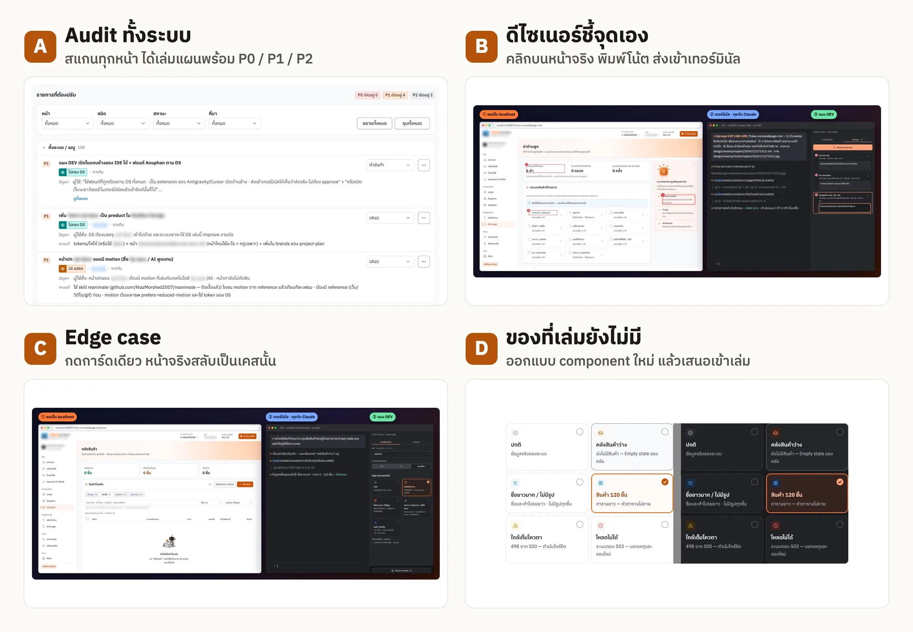
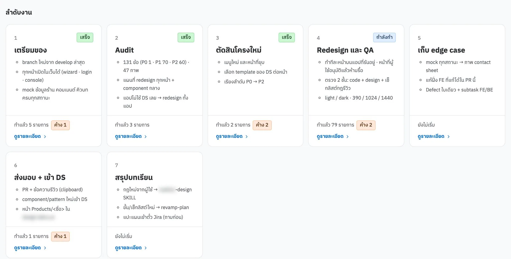
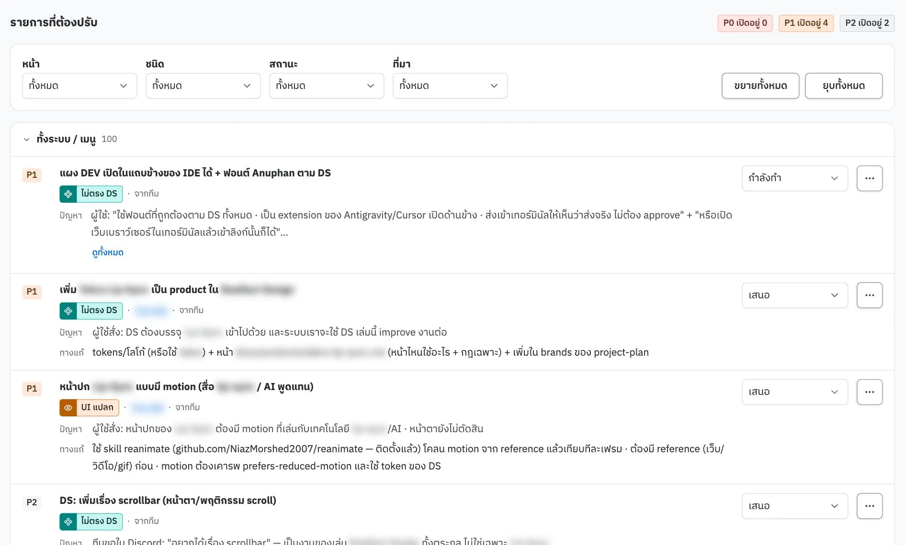
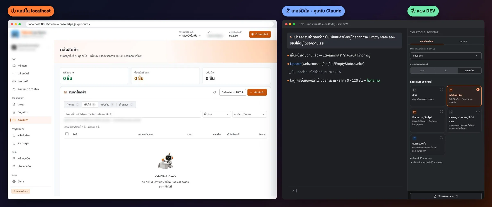
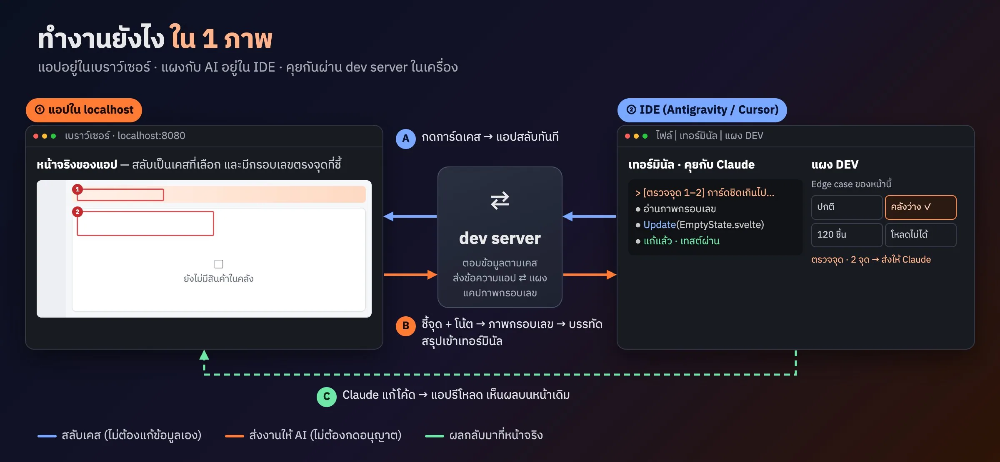
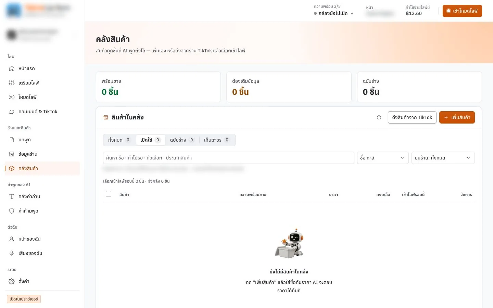
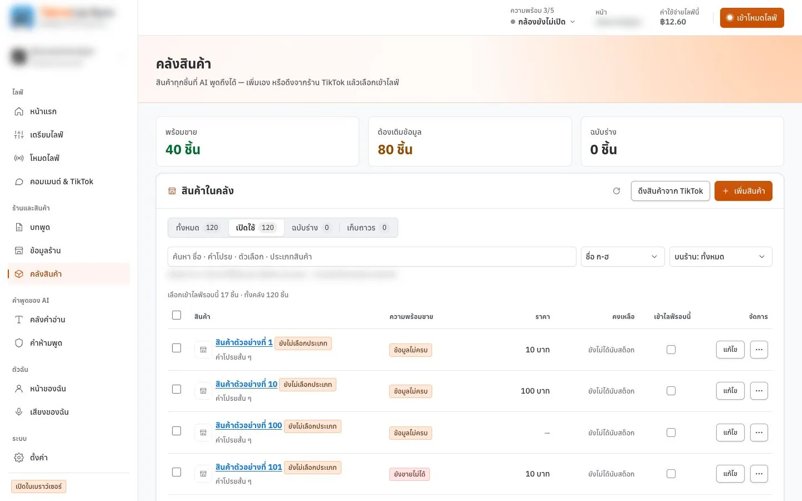
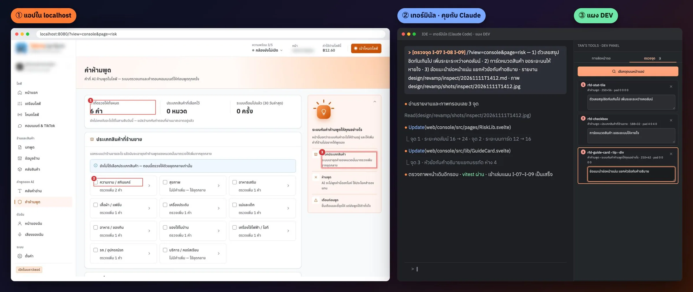
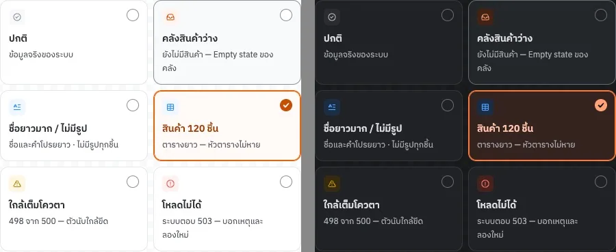

Tan’s Tools · DEV panel
The AI knows the rules from the Design System our team maintains and sees the real page on localhost itself — while the DEV panel beside the IDE puts the page into the case to check and sends fixes with numbered screenshots. So most of my time goes back to design decisions

For AI to fix UI accurately, it has to know “what right looks like” and it has to “see” the real page it is changing, not guess from a screenshot — so I solved it in two layers: AI reads the Design System our team maintains first, then AI in the terminal opens the real page on localhost itself, with a DEV panel next to the terminal acting as a remote that puts the page into the case I want to check
AI has to know“what right looks like” and has to“see” the real page
At my day job I redesigned an entire desktop app together with Claude Code — if the AI doesn't know the team's rules, it picks colors and spacing on its own. If it only sees a screenshot, it guesses which element the red box means. And my time goes into explaining things again and steering the page into the case I want to look at

To see what an empty inventory looks like, I had to delete items. To see 120 items, I had to create more. To check the dark theme, I had to go to settings. And when I found something wrong, I had to take a screenshot, draw a box, then type out for the AI where “here” actually is
AI doesn't know what the team considers right
Left alone, AI picks colors, spacing and buttons that look good by its own taste. The page looks nice but doesn't match the team's other products
Edge cases have to be built by hand every time
Empty state, overflowing data, names that are too long, the system returning an error — no button takes you there directly. You edit real data, then delete it again
No way to tell which page is still missing which case
The checklist lives in someone's head or in a doc nobody opens, so we only check the cases we happen to think of
Handing fixes to AI with screenshots and descriptions
A picture doesn't tell the component name, size or spacing, so the AI has to guess. And capturing a browser tab needs a permission click every time
Test panels float over the page under review
Dev tools placed inside the page cover the content I want to look at, and use a different font from the design system
Two layers, applied to4 real cases
The first layer is the rules, the second is the eyes — without either one, the AI still has to guess
- Layer 1 · AI reads the Design System our team maintains first — our team built this system and maintains it together. It is the shared language of every product on the team. AI reads its tokens, components and rules through a skill, then edits code using components from the system
- Layer 2 · Ask the AI in the terminal to open localhost — the AI sees the screenshot, the page structure and the real style values of the page it is editing, and re-checks the page itself when it's done

Full-system audit
The audit skill scans every page against the system and produces a plan book with a P0 / P1 / P2 fix list and annotated screenshots See the plan book ↓
Designer points at spots
Click an element on the real page, type a note, send a numbered screenshot to the terminal, with no permission prompt See image ↓
Edge case
One card click switches the real page to empty inventory · 120 items · long names · system down (52 cases across 13 pages), then the AI checks that case See image ↓
What the system doesn't have yet
Design new components, such as a status picker card, and bring them back into the system for the whole team — a PR is currently open for team review See image ↓
The AI gets less work that requires guessing. I no longer explain the rules again or steer the page into each case myself — most of my time goes back to design decisions
AI reads the Design System first, thenaudits every page against it
The Design System is something our team built and maintains together — AI reads its tokens, components and rules through a skill, then uses the audit skill to check every page against the system. The output is a plan book made from the system's own template, so from day one I know what to fix, at what priority, and which stage of the work it's in

- Prepare → Audit → Decide the new structure — checking every page against the Design System found 131 items, split into P0 1 · P1 70 · P2 60. Then I picked a Design System template for each page before drawing anything new
- Redesign and QA → Cover edge cases — fix one page at a time on the running app, check both light/dark themes and 390 / 1024 / 1440 screens, then go through every state of the page — this is where the DEV panel came from
- Hand off + add to the Design System → Wrap up lessons — new components that came up along the way go back into the system through a PR for team review (case D), and new rules from reviews become the checklist for the next round

Ask the AI to open localhost and control the real pagefrom outside
The AI in the terminal can open the page it's editing by itself and see the screenshot, the page structure and the real style values, then re-check when it's done — and since most problems show up when pieces sit together on the real page, I control the real page to put it in the case I want to check, instead of pulling components out to look at one by one

| Option | What you see | Cost | Why it was dropped / chosen |
|---|---|---|---|
| A standalone component viewer (Storybook-style) | One piece at a time, out of context | Write a story for every state | The piece looks fine, but you can't see what it collides with on the real page, and there are two places to maintain |
| Edit mock data by hand every time | The real page | Several minutes per case | Real result, but slow, easy to forget to reset, and nobody else on the team can repeat it |
| A panel that controls the real page + an edge case file per project Chosen | The real page, every declared case | Write one JSON file once | The dev server returns data for the selected case, the real page switches in one click, and the same file is the team's checklist |
Three parts that talk through a single dev server
The app is in Chrome, the panel is in the IDE, and the AI is in the terminal — none of them need to know each other directly

- IDE extension — a webview in the right sidebar of Antigravity / Cursor / VS Code that embeds the panel, and the only part that can type into the terminal
- dev server — an SSE message pipe so the panel and the app can talk across browsers · answers the API according to the selected case · receives fix reports and takes the screenshots itself
- Edge case file per project — pages that follow the real menu · the cases for each page with the data the API should return · cases that can't be simulated yet, listed for manual checking · a link to the redesign plan book
- Same design system as the app — the panel uses fonts, colors and components from the same Design System as the app — the status picker card I designed is being brought into the system (PR open for team review)
How to use it — 5 steps, from picking a page to the AI making the fix
Your hands never leave the IDE, and no permission window ever pops up


Pick a page
The page selector follows the app's real menu order. Click Next to walk through the whole flow page by page
Click an edge case card
The dev server changes the API response for that case, then the app page reloads — the case clears itself when you change pages
Switch the app theme
Light · dark · system, written straight into the app's theme setting, so both themes can be checked from one place
Point at what needs fixing
Click an element on the real page, press ↑ to expand to the parent box, get a numbered red outline, then type what to fix
Send to Claude
Captures a screenshot with numbered boxes, adds it to the plan book, and types a summary line into the terminal with the image path — the AI starts working right away

Six things I ran into along the way
Most are browser and IDE limits that only show up once the panel actually moves out of the app page

Capturing a browser tab needsa permission click every time
At first I used getDisplayMedia to capture the tab as it was, but Chrome asks for screen-sharing permission every time. With frequent sends, I was clicking Allow all day
BroadcastChannel only workswithin one browser
Once the panel moved into the IDE, the panel and the app were in different browsers. Clicking Next did nothing
An iframe in the IDE webview gets isolated storage
The panel used to remember the app's page in localStorage, but in the IDE the value didn't stick, so the panel kept reloading itself in a loop
With the app open in two tabs, the panel reloads back and forth
Both tabs report their url every second. The panel follows one tab, then the other pulls it back
The server-running check was blocked byits own CSP
The webview blocked fetch to localhost, so the check concluded the server wasn't running and hid the panel even though everything was ready
connect-src for localhost — the lesson: a misleading error message is worse than no messageA tickable checklist didn't make checking faster
In the first round, edge cases were checkboxes with a “view on page” button. The user (me) said the information order was wrong, because what I wanted was a card that switches the real page when clicked, not something to tick
The edge case file is a checklistyou can run
Write the cases once and use them while designing, while reviewing, and when handing off to the team

- Cases live in the project's file — each project has different Empty states and edge cases, so the panel reads the file of the project that's open
- Run every case automatically — a script opens every card on every page, checks for errors, and makes one overview image of all cases
- Fix reports go into the plan book — 1 spot = 1 item, with a numbered screenshot in the same format as the automated scan results, so the team sees everything in one place
What I chose not to build
A tool for the people doing the work, not a product feature — and some parts are still incomplete
- Not every piece is a system component yet — fixes always use components from the system first, but the app still has its own styles that are gradually moving into the system. Pieces the team should share get a PR for team review, like the status picker card
- Only in the dev server — not in the app that ships to customers — the panel and the stand-in API responses exist only during development
- No camera or video capture — images rendered from the DOM don't include canvas/video content — cases that need a real camera stay on the manual check list
- Nothing leaves the machine — reports and images stay in the project, messages go into the local terminal, with no external service involved